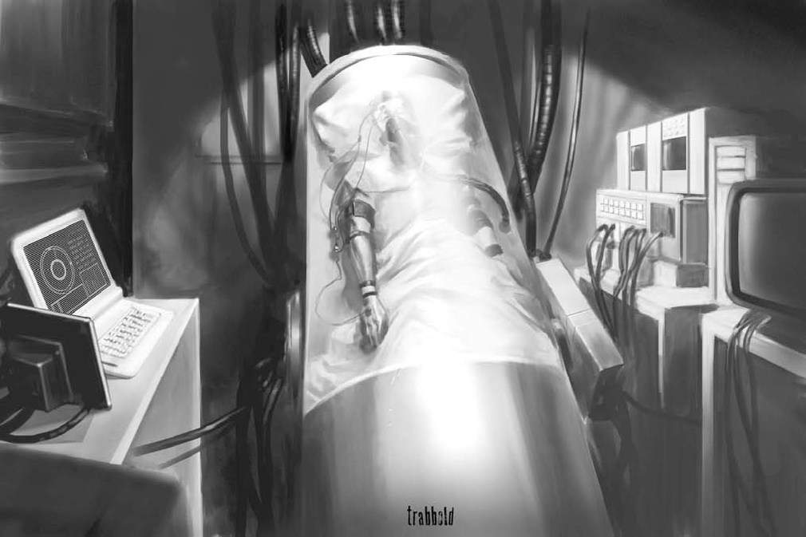
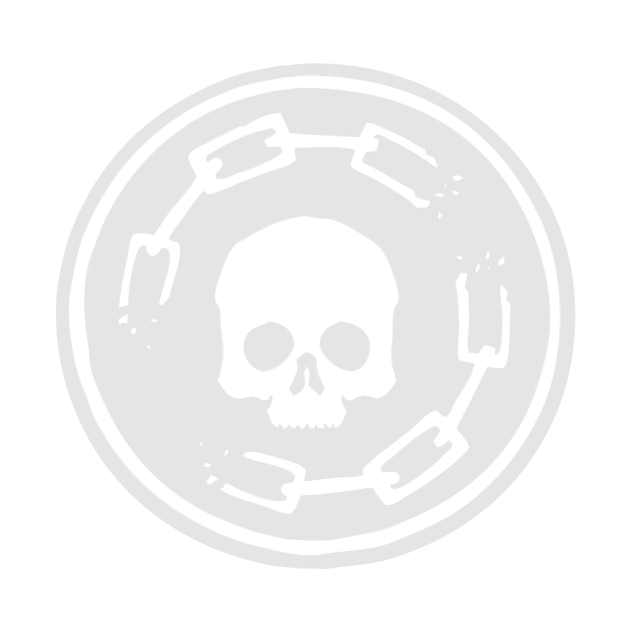

Orpheus est ma baleine blanche.
Il s’agit du dernier jeu sorti par White Wolf dans l’univers du Monde des Ténèbres en 2003. Conçu par Lucian Soulbarn, (le gars qui a écrit tous les Far Cry chez Ubi Soft Montréal depuis) il possède l’originalité d’être une gamme fermée de six livres. Chaque livre est à la fois un supplément de jeu, le chapitre d’une campagne et une évolution du méta-plot. Pour resituer le contexte, White Wolf était connu pour pisser des dizaines et des dizaines de suppléments pour chacun de ses jeux - allant de l’important au plus débile et grotesque (supplément sur les gitans bien raciste et bien ricain) - et surtout pour un méta-plot confus, incompréhensible et lui aussi débile.
Bref Orpheus va à l’encontre de TOUT ça et offre en plus le défi de jouer des gens normaux : pas des vampires, pas des loup garous, pas des mecs super balaises mais des gens normaux. Et pour moi, c’est l’un des meilleurs jeux de rôle jamais créés.
Oui, mais de quoi ça parle ?
Vous jouez dans le Monde des Ténèbres, du contemporain ténébreux où en théorie pullulent toutes sortes de créatures surnaturelles à chaque coin de rue. Sauf que dans Orpheus, niet des Vampires et autres trucs bizarres (ou alors ils se cachent très bien) à l’inverse l’homme de la rue se DOUTE qu’il y a une vie après la mort. Depuis la nuit des temps, l’homme a toujours cru aux fantômes mais dans Orpheus, c’est un fait avéré.
Les joueurs incarnent des êtres comme vous et moi ayant la particularité d’avoir frôlé la mort et subi de multiples Near-Death Experiences. Un accident de la route, un cancer en phase 4, un service militaire en Irak, un mauvais coup pris dans un bar - votre personnage a vu la grande lumière au bout du tunnel ou peut être a-t-il vu sa vie défiler devant ses yeux ? A vous de le décider mais à cause de son passé, il a été contacté par une entreprise façon GAFA appelée Orpheus. Le salaire était mirobolant et les conditions de travail fabuleuses donc vous avez signé pour devenir “projecteur”.
Après six mois d’entraînement dans les locaux d’Orpheus façon stage de cohésion d’équipe, vous avez été mis au fait de la nature de votre travail : “mourir” pour quelques heures pour interagir avec des entités post-vie, des fantômes.
Rien que ça.
A l’aide de drogues, de méthodes de méditation et de caissons cryogéniques, Orpheus vous a appris à plonger dans le monde des morts. Il est identique au nôtre, C’EST LE NOTRE mais vous y êtes intangible, invisible aux yeux des vivants et vous n’y êtes pas SEUL. Des fantômes y errent, certains ne vous voient pas, plongés dans une routine, certains sont conscients et amicaux, d’autres beaucoup moins.
Quel est l’intérêt d’Orpheus dans tout ça ? L’argent, ni plus, ni moins.
Certaines personnes CROIENT aux fantômes et sont prêtes à payer des sommes colossales à Orpheus pour contacter l’autre monde. Les exemples sont multiples mais voici quelques missions dont Orpheus charge ses agents :
Les missions sont diverses et variées mais restent toutes extrêmement profitables. De plus, le personnel médical et technique d’Orpheus veille sur votre corps quand vous êtes en mission. En somme, le meilleur des deux mondes.
Juste un mot d’avertissement pour conclure : Le jeu est une gamme fermée de six chapitres avec chacun de nombreux retournements de situation qui affecteront grandement vos personnages, votre manière de jouer et le monde dans lequel vous évoluerez.
Pensez à un concept de personnage en deux, trois mots.
Les projecteurs d’Orpheus viennent de tous les horizons sociaux mais possèdent tous UNE chose en commun : ils ont vécu de multiples expériences de mort imminente. L’équipe de recherche d’Orpheus postule que c’est cette raison qui leur permet de se projeter. Certains projecteurs croient aux fantômes, d’autres non. Certains sont curieux, d’autres ne sont là que par appât du gain. Une poignée connaissait Orpheus avant d’être recruté mais la plupart ignorait tout de l’entreprise.
Pour le contexte, le jeu se déroule à San Francisco en 2020 et je vous encourage fortement à créer un vrai personnage avec une famille, des amis et un ancien travail. Je n’accepterai plus les justiciers esseulés, richissimes et solitaires borderline sociopathes. 😀
Choisissez une vertu et un vice.
Il est difficile d’agir en suivant sa vertu et elle va toujours à l’encontre de ses intérêts.
Exemples : espoir, foi, justice, courage, retenue, prudence, amour, honnêteté, humilité, confiance, loyauté, pacifisme, ambition, patience, générosité, gentillesse, méthodique, politesse, obéissant, ponctuel, efficace, précis, attentif, chaste
A l’inverse, céder à son vice offre un réconfort sur le court terme mais engendre des conséquences néfastes.
Exemples : orgueilleux, colérique, lubrique, paresseux, glouton, envieux, pessimiste, haineux, trompeur, traître, cruel, corrompu, lâche, hâtif, naïf, obsédé, froid, territorial, silencieux, curieux, incongru, bavard, dénué d’empathie
Choisissez trois aspirations.
Les aspirations sont des objectifs à court, moyen et long terme qui VOUS semblent importantes pour le personnage. Voici quelques exemples :
Chaque personnage commence avec 1 point dans chaque attribut.
Ensuite, répartissez 12 points supplémentaires COMME vous le souhaitez entre les neuf attributs. (Niveau 4 MAX)
Répartissez 22 points COMME vous le souhaitez entre les vingt-quatre compétences. (Niveau 3 MAX)
Vous possédez 3 spécialisations de compétence à la création. C’est un mot-clef que vous ajoutez à l’une de vos compétences qui vous donne un bonus de +1 à votre jet quand vous faites usage de ladite spécialité. Des exemples sont donnés ci-dessous.
Si le personnage ne possède pas la compétence physique adaptée alors il encourt une pénalité de -1 sur son jet.
Si le personnage ne possède pas la compétence sociale adaptée alors il encourt une pénalité de -1 sur son jet.
Si le personnage ne possède pas la compétence mentale adaptée alors il encourt une pénalité de -3 sur son jet.
Même si vous n’êtes qu’un être humain fait de chair et de sang, vous possédez une étrange connexion à la mort qui vous a ouvert les portes de l’entreprise Orpheus, spécialisée dans la gestion des entités post-vie. (PLE)
Voici ce qui rend votre personnage “unique” et ce qui le lance dans cette histoire.
Même si les agents proviennent de tout bord professionnel, Orpheus entend bien former ses employés à se défendre et à se perfectionner dans leur gestion des PLE. Pour simuler vos mois de formation :
Les PLE sont des créatures mues par leurs émotions donc les capacités des projecteurs (et par extension des Spooks) sont définies par ces dernières. La Shade provient autant de votre cerveau que de votre coeur. C’est la manière dont vous abordez les choses de la vie et donc de la mort.
Elle définit leurs Horreurs (pouvoirs) ainsi que la manière dont ils se manifestent aux mortels. Les manifestations sont définies par la dépense de Vitalité (nous y reviendrons) et peuvent être altérées si le niveau de Rancoeur devient égal ou supérieur à la Vitalité actuelle. (souligné entre parenthèse)
Il existe sept Shades recensées par Orpheus :
Votre Shade vous a poussé à employer une certaine méthode pour résoudre vos problèmes de votre vivant. Une fois “mort”, cette méthode vous connecte avec vos expériences passées. Choisissez une des deux approches selon votre Shade. A chaque fois que vous faites une réussite critique avec cette compétence, vous regagnez un point de Vitalité.
Comme suggéré précédemment, les Horreurs sont la manifestation ultime de votre personnalité, moyennant une décharge d’énergie surnaturelle. Vous gagnez automatiquement l’Horreur de base de votre Shade (celle en italique) et vous pouvez au choix :
Toutes les Shades possèdent une personnalité spécifique qui s’oppose à une autre. Comme dans la vraie vie, une personne dont la vie se base sur la compréhension, l’analyse et la communication ne pourra pas imaginer résoudre ses problèmes à coups de poing.
Chaque Horror est plus ou moins efficace selon le nombre de points de Vitalité investis et le nombre de succès réalisés. Elle peut être utilisée sans Vitalité pour réaliser un effet mineur. De plus, chaque horreur peut être utilisée comme une aide pour améliorer l’Horreur d’un autre membre du Crucible. Une seule personne peut aider une autre.
Vous trouverez la liste des Horreurs avec une brève description ainsi que les oppositions de Shade.
Si la Shade est la manifestation de votre nature sous forme d’ectoplasme, la Lament est la méthode que vous employez pour projeter cette nature. Les agents d’Orpheus, les vivants du moins, ont développé deux méthodes pour se projeter dans le monde des morts. Vous devez choisir celle que vous préférez en fonction de votre goût personnel. Attention, il n’y a PAS de meilleure méthode. Elles peuvent changer au cours du jeu.
Sleeper (Dormeur) - La méthode traditionnelle employée par Orpheus datant de son époque “JD Cryogenics”. L’agent est mis dans un caisson cryogénique renforcé et plongé dans une mort artificielle pendant qu’une équipe scientifique s’assure de la préservation du corps.
Skimmer (Bec-en-ciseaux) - La méthode poussée par des années de recherche sur le terrain par Orpheus. Par une série d’injections et de méditation prolongée, l’agent est capable de sortir et de revenir dans son corps à l’envie.
Les Souillures sont les manifestations physiques de vos insécurités et faiblesses personnelles. Elles ne sont pas toujours évidentes, elles apparaissent seulement si votre personnage est dos au mur, physiquement ou mentalement.
Vous devez en choisir trois parmi la liste suivante à la création de personnage. N’oubliez pas qu’elles représentent votre for intérieur donc choisissez-les en connaissance de cause :
Adder Scales (Ecailles de vipère)
Armless (Pas de bras, pas de chocolat)
Avantage : Obtient trois niveaux de santé supplémentaires grâce aux bras absorbés. Seules les mains dépassent grotesquement des épaules.
Désavantage : Pas de bras lorsque la Stain est utilisée, -3 dés à toute action les nécessitant.
Armor of Corpulence (Armure adipeuse)
Avantage : Immunisé à tous les dommages « contondants » et ne subit qu’un quart des dommages « létaux ». Le feu, l’électricité font des dommages normaux.
Désavantage : Les mouvements sont restreints à 3 mètres par tour et toute action impliquant des déplacements se fait avec un malus de –4.
Atrophy Compensation (Atrophie compensatoire)
Avantage : Obtient +2 à un attribut physique.
Désavantage : -2 à un autre attribut physique.
Bad Blood (Mauvais sang)
Avantage : En se coupant une artère principale (1 point de dommages létal), peut infliger des dégâts « létaux » sur un jet de Dextérité + Tir + 4 à un adversaire se trouvant à moins de 3 mètres. Ce sang brûle la peau, le plasme et tache de noir tout ce qu’il touche.
Désavantage : Deux fois par jour, doit se saigner ou subir 4 dégâts létaux. Ne peut être utilisé plus de 4 fois par jour, puis le mauvais sang se recharge au rythme d’une dose par jour de « repos ».
Bat’s Ears (Oreilles de chauve-souris)
Avantage : Perçoit son environnement par écholocation. Peut « voir » dans le noir, mais ne peut pas voir ce qui est dissimulé.
Désavantage : Autres sens engourdis, -2 sur les jet de perception impliquant d’autres sens.
Beast Nose (Groin)
Avantage : Peut suivre la piste de quelqu’un jusqu’à deux jours après son passage. Succès automatique à moins que la proie n’ait pas vraiment d’odeur, un jet d’Astuce + Survie est alors nécessaire. Si le traqueur possède Storm-Wending, il peut suivre quelqu’un qui aurait utilisé cette Horreur.
Désavantage : -2 pour toute action sociale, toute odeur forte provoque une réaction (pénalité).
Bileous Spew (Bave acide)
Avantage : Crache de l’acide comme avec un jet de Dextérité + Tir + 6. Provoque des dégâts létaux.
Désavantage : Chaque utilisation fait perdre 1 point de Stamina pour la durée de la scène. Lorsque l’attaquant n’a plus que 1 de Stamina, il ne peut plus utiliser l’attaque.
Blackfire Speech (Noir parler)
Avantage : Murmurer ne provoque pas de dommages. Parler normalement inflige un point de dégâts « létaux » à tous ceux qui se trouvent 1 mètre devant l’orateur. Parler fort inflige 2 points de dégâts « létaux » à tous ceux qui se trouvent 2 mètres. Crier provoque des flammes noires qui inflige 3 points de dégâts « létaux » à tous ceux qui se trouvent 3 mètres.
Désavantage : Ne peut cacher sa Stain, des flammes sortant constamment de sa bouche et de ses narines. Craquement et sifflement rendent la personne difficile à comprendre quand elle parle (jet d’Astuce + Calme nécessaire pour comprendre lorsqu’elle parle).
Bristling Hide (Peau de Hérisson)
Avantage : Donne 1 d’armure et inflige un point de dégâts « letaux » à tous ceux qui le touchent. Désavantage : Chaque jour où la Stain est utilisée, tout esprit à proximité doit réussir un jet de Calme ou être attiré vers l’esprit (et donc potentiellement subir 1 point de dégâts « létaux »).
Brutish (Brute)
Avantage : Gagne deux niveaux de « Health », trois points de Force, un mètre et des dizaines de kilos supplémentaires.
Désavantage : Ne peut plus bouger rapidement et perd 5 d’Initiative systématiquement, plus la moitié de sa vitesse de déplacement. Perd 1 à toute action sociale (sauf Intimidation) et divise par deux ses habiletés mentales.
Carapace
Avantage : Obtient 1 d’Armure pour les attaques venant de l’arrière. Peut ouvrir la carapace pour révéler des ailes qui permettent de « voler » sur une distance de Force x2 mètres.
Désavantage : -1 dés à toute action liée à la Dextérité.
Chameleon Skin (Peau de caméléon)
Avantage : +3 dés pour jets de Furtivité.
Désavantage : Points lors des jets sociaux avec d’autres Spooks réduit de moitié.
Claws (Griffes)
Avantage : Griffes qui peuvent infliger +2 points de dégâts « létaux».
Désavantage : -2 pour toute action demandant de la précision manuelle.
Compound Eye (Oeil de mouche)
Avantage : L’esprit peut voir à 360 degrés.
Désavantage : Des problèmes de mise au point entraînent -2 pour les attaques à distance.
Corrosive Pustules (Pustules corrosives)
Avantage : Décharge du pus corrosif qui inflige 2 points de dégâts « létaux » à tous ceux qui le touchent.
Désavantage : La douleur des pustules cause -1 dé à tous les jets.
Dagger Tongue (Langue extensible)
Avantage : « Tire » sa langue jusqu’à 10 mètres et inflige +1 point de dégâts « letaux ».
Désavantage : Ne peut parler poliment sans réussir un jet de Détermination. (pour une scène)
Foaming (Baveux)
Avantage : Ecume comme un animal enragé. Si l’écume entre dans la blessure d’un adversaire (comme lors d’une morsure), elle provoque une intense douleur et réduit les jets de l’adversaire de 3 pour 5 tours, puis un -1 par tour.
Désavantage : Perd automatiquement - 3 à tout jet social et laisse une trace d’écume qui peut être suivie.
Foul Odor (Odeur pestilentielle)
Avantage : À cause d’une odeur nauséabonde, provoque -2 sur tous les jets de perception et d’attaque pour ceux situés à - de 6 mètres.
Désavantage : Affecte tout le monde. (sauf le porteur évidemment)
Gaunt (Déguingandé)
Avantage : Léger et rapide sur ses pieds. Dextérité augmente de 3 points et l’Initiative de 5.
Désavantage : Plus fragile qu’à l’habitude. Perd 2 de Stamina et 1 niveau de Santé lorsqu’il utilise la Stain.
Hammer Fists (Poings marteaux)
Avantage : Inflige +4 à chaque coup de poing.
Désavantage : -2 en Dextérité.
Hawk’s Beak (Bec d’aigle)
Avantage : Morsure infligeant +1 de dégâts létaux.
Désavantage : Sans lèvre, ne peut communiquer adéquatement. Jet de Détermination nécessaire pour s’exprimer clairement pendant une scène.
Hooves (Sabots)
Avantage : Les coups de pieds infligent +2 de dégâts létaux.
Désavantage : -1 dé de Dextérité, -2 dés de Furtivité.
Infestation
Avantage : De la vermine émerge du corps de l’esprit et peut répondre à ses commandes, allant jusqu’à attaquer. L’attaque provoque peu ou pas de dommage, mais enlève 5 à l’initiative et 2 dés de perception.
Désavantage : L’esprit est également distrait par la vermine et perd 2 dés de Perception.
Man-of-War (Vessie de mer)
Avantage : Devient gélatineux et ne prend que la moitié des dommages « contondants».
Désavantage : Difficile de coordonner les mouvements. (-1 à tout jet de Dextérité)
Mandibles (Mandibules)
Avantage : Mâchoires d’insecte infligent +3 points de dégâts létaux.
Désavantage : Ne peut parler.
Martyred (Martyr)
Avantage : Une fois par tour, peut toucher un adversaire (Bagarre) et lui infliger la dernière attaque qu’il a reçu (un jet est tout de même nécessaire pour mesurer les dégâts infligés). Si la dernière attaque a été oubliée, inflige Force + les succès accumulés lors du touché.
Désavantage : Un échec critique alors que la Stain est active inflige de nouveau la dernière attaque à l’esprit.
Pseudopods (Pseudopodes)
Avantage : L’esprit a plusieurs appendices supplémentaires qu’il peut utiliser pour attaquer au corps-à-corps « à distance » (jusqu’à deux mètres). Il peut également les utiliser pour des actions rudimentaires. L’esprit ne peut utiliser que la moitié de son bonus sur ces attaques séparées.
Désavantage : Durant la scène, il doit réussir un jet de Détermination pour éviter de se mélanger entre ses membres normaux et ses pseudopodes. En cas d’échec, -2 aux jets appropriés.
Roaming Eyes (Yeux mobiles)
Avantage : Ses yeux peuvent se promener à travers son corps.
Désavantage : Quand un ou les deux yeux se promènent, -2 à toutes les actions demandant un sens des profondeurs (viser, éviter, conduire).
Rooted (Enraciné)
Avantage : Ne peut être déplacé du site choisi.
Désavantage : Mouvement réduit au quart. S’il demeure au même endroit plus de 5 minutes, doit réussir un jet de Force –1 pour se déraciner. (difficulté de –1 pour chaque tranche de 5 minutes supplémentaires)
Shark’s Appetite (Appetit de requin)
Avantage : A l’habileté de manger et de mastiquer n’importe quoi. Comme une prise de Lutte mais inflige automatiquement (lorsque réussi) +2 points de dégâts létaux par tour.
Désavantage : Doit constamment manger ou alors dévorer des parties de lui-même. (-1 Vitalité par scène, ou 3 par jour)
Skeletal Form (Forme squelettique)
Avantage : Peut effrayer les observateurs en utilisant Manipulation + Intimidation.
Désavantage : -5 à tous les jets sociaux.
Spider’s Bristles (Poils d’araignée)
Avantage : Peut grimper sur les murs et surfaces lisses comme une araignée. Ne peut transporter quelqu’un avec lui.
Désavantage : Nuit à sa Dextérité (réduit de moitié ses bonus lors des jets pour tâches délicates).
Stinger (Dard)
Avantage : Attaque réussie provoque automatiquement 1 point de dégâts létaux, puis 3 points de dégâts « contondants » pendant 5 tours (seulement trois doses dans le dard, régénère une par jour).
Désavantage : Utiliser le dard est douloureux, provoque un malus de dommage (-1, -2, -3) de plus pendant trois tours.
Worm Hair (Chevelure d’asticots)
Avantage : Permet de lire les pensées en surface des esprits dans la ligne de vue (Astuce +Occulte, une information par succès).
Désavantage : l’esprit de ruche entend les pensées du personnage si des membres se trouvent dans un rayon de 30 mètres.
Withered (Affaibli)
Avantage : Apparaît toujours comme un fantôme très faible, peu importe la dépense de Vitalité.
Désavantage : Fragile, perd 2 de dégâts contondants supplémentaires par attaque subie.
Les avantages constituent des caractéristiques uniques à votre personnage. Elles peuvent être physiques ou provenir de votre passé. Ils font partie de votre essence et le façonnent dans sa vie… et sa mort.
Vous possédez SEPT points à dépenser pour acheter des avantages. Prenez bien le temps de réfléchir à ce que vous souhaitez.
Ancre (•) à (•••••)
Vous possédez un memorabilia qui vous rappelle votre passé qui permet de regagner de la Vitalité, une fois par session de jeu. Vous ne pouvez recouvrir cette Vitalité qu’en présence de l’objet. Plus le niveau est important, plus l’objet est GROS. (Récupération : 3/6/9/12/15)
Arsenal (•) à (•••••)
Vous avez beaucoup, beaucoup d’armes dans une planque.
Artefact (•) à (•••••)
Vous avez un objet qui vous accompagne quand vous vous projetez. Le niveau correspond au bonus donné par l’objet et/ou son degré de complexité.
Mutuelle (•) à (•••••)
Orpheus vous offre une généreuse mutuelle santé pour vous faire soigner et cas de pépin et ne rien payer. Les niveaux supérieurs vous donnent accès à plus de matériel et une plus grande couverture. Bref, vous êtes assuré en cas de problème. :)
Zelig (•) à (•••••)
Vous pouvez comprendre les fantômes (les blips, les drones) et leur faire croire que votre Vitalité est plus importante que ce qu’elle est vraiment. Cet avantage ajoute un bonus à votre Vitalité “apparente” pour les fantômes (mais pas pour les spectres). De même, il ajoute le même bonus en Empathie et Persuasion.
Repaire (•) à (•••••)
Vous possédez un lieu tellement acclimaté à la Vitalité de votre personnage que votre simple présence le rend sûr. Aucune apparition hostile ne peut pénétrer dans ce lieu tant que votre personnage y est. Le niveau indique la taille du repaire.
Voile (•) à (•••••)
Vous pouvez augmenter ou baisser votre Vitalité apparente d’autants de points que cet arrière plan.
Visage (•) à (•••••)
Vous pouvez modifier autant de traits physique et cacher un nombre équivalent de stigmates que le niveau de cet avantage.
Sangsue (•)
Pour chaque heure que vous passez en compagnie d’une autre apparition, il perd un point de Vitalité et vous en gagnez un. Vous n’êtes pas très apprécié par les hues.
Recharge rapide (••)
En revenant dans votre corps physique, 20 minutes suffisent pour récupérer l’intégralité de votre Vitalité. Agir de la sorte provoque un point de dégât létal qui ne peut être encaissé.
Ecouter les ondes (•••)
Vous entendez les conversations des spectres situés à moins de 30 mètres de vous en faisant un jet de Perception + Empathie. Si les source de communication sont particulièrement puissantes, vous devez dépenser un point de volonté pour éviter que vos pensées soient absorbées par le bruit. Ne pas dépenser de point signifie que les spectres savent exactement où vous vous situez… et vous cherchent.
Sommeil lourd (•••)
Vous pouvez rester en cryogénie deux fois plus longtemps qu’une personne normale.
Nexus - (•••) à (•••••)
Normalement, UN personnage peut aider UN autre personnage à utiliser une horreur mais en votre présence, PLUSIEURS personnages peuvent aider UN autre. Au niveau 3, deux effets se cumulent, au niveau 4, trois et au niveau 5, quatre. Notez que VOUS agissez comme nexus à ce moment là et vous DEVEZ vous consacrez à cette action et rien d’autre.
Déphasé - (•••)
Vous êtes invisible même aux apparitions, à moins de vous manifester. Le problème est que vous devez dépenser de la Vitalité pour être vu par vos alliés. (1 point pour une scène)
Dynamo - (••••)
Skimmers uniquement.
Vous avez un métabolisme très rapide et vous récupérez 4 points de Vitalité par heure au lieu d’un seul.
Inpénétrable (••••)
Votre corps est immunisé à la possession.
Lumineux (•••••)
Vous pouvez avoir 15 points de Vitalité max au lieu de 10. Attention quand vous possédez 11 ou + points de Vitalité, TOUTES les apparitions vous détectent à 5 km à la ronde. Il n’est pas dit qu’ils partent à votre recherche mais ils savent qu’un phare en plein nuit vient de s’allumer.
Domaine d’expertise (•)
Prérequis: Détermination •• et une Spécialité de Compétence
Effet: Votre personnage est curieusement spécialisé dans un domaine. Votre spécialité vous donne +2 au lieu de +1.
Bon sens (•••)
Effet: Votre personnage a les pieds sur terre et fait preuve de logique implacable. En un instant, elle peut estimer l’issue de différents plans d’action. Une fois par séance, vous pouvez faire un jet d’Astuce + Calme. Si vous réussissez le MJ doit vous répondre du mieux qu’il peut ç l’une des questions suivantes. Si vous échouez, vous n’aurez aucune réponse. Chaque réussite supplémentaire vous octroie le droit de poser une question supplémentaire : quel est le pire choix ? Qu’est ce que je risque ? Quel est le choix le plus sûr ? Est ce que c’est une fausse piste ?
Sens du danger (••)
Effet: Vous gagnez un +2 au jet instinctif d’Astuce + Calme pour détecter une embuscade.
Sens de l’orientation (•)
Effet: Votre personnage possède un sens inné de l’orientation et perçoit toujours sa localisation spatiale. Il sait toujours à quelle direction il fait face et ne peut subir de pénalités pour se repérer géographiquement.
Mémoire eidétique (••)
Effet: Votre personnage se souvient des évènements passés et de détails avec une grande précision. Vous ne faites pas de jets pour vous souvenir des vos expériences passées. Quand vous faites un jet d’Intelligence + Calme (ou compétence appropriée) pour vous rappeler d’informations précises, ajoutez un bonus de +2.
Savoir encyclopédique (••)
Effet: Choisissez une compétence. A cause d’un hobby obsessionnel, de la pop culture ou de ses études, le personnage possède une connaissance illimitée sur ce sujet, même sans avoir de points dans la compétence. Vous pouvez faire un jet d’Intelligence + Astuce pour obtenir des détails importants sur un problème pertinent lié à votre sujet.
Réflexes fulgurants (• à •••)
Prérequis: Astuce ••• or Dextérité •••
Effet: +1 Initiative par point
Les réflexes de votre personnages impressionnent et stupéfient. Il réagit toujours très vite.
Organisé (•)
Prérequis: Erudition •• ou Science ••
Effet: Votre personnage possède beaucoup d’expérience pour gérer des projets à bien dans un délai très serré. Toute action étendue voit son temps entre chaque lancer divisé par deux entre chaque jet.
Zadiste (•)
Effet: Votre personnage pratique la médecine alternative. Là où des esprits cartésiens hausseraient les épaules, il peut porter une aide médicale basique par des moyens naturels. Il sait quelle herbe peut ralentir une infection et quels minéraux peuvent couper court à une maladie bénigne. A moins que votre patient souffre de pénalités dues à des blessures létales ou aggravées, vous n’avez pas besoin de matériel médical pour le stabiliser et le soigner. Il vous suffit d’avoir accès à un espace vert, une serre ou toute autre source de plantes et un jet d’Astuce + Survie vous donnera tout ce dont vous avez besoin.
Indomptable (••)
Prérequis: Détermination •••
Votre personnage possède une volonté de fer. A chaque fois qu’un être surnaturel use de ses pouvoirs pour influencer vos émotions ou vos pensées, ajoutez +2 au jet d’opposition. Cela ne marche que contre la coercition surnaturelle.
Spécialité interdisciplinaire (•)
Prérequis: Compétence à ••• ou plus avec une Spécialité
Effet: Choisissez une Spécialité possédée par votre personnage, son bonus de +1 peut désormais s’appliquer à n’importe quel jet de compétence de 1 ou + dans la limite du raisonnable. Exemple : Médecine (Anatomie) pour viser une partie spécifique du corps avec Armes.
Langue (•)
Effet: Votre personnage maîtrise une langue supplémentaire en plus de sa langue natale. Une langue par point d’avantage. La langue est parlée, écrite et lue.
Bibliothèque (• à •••)
Effet: Votre personnage possède une pléthore d’informations sur un sujet particulier. Choisissez une compétence mentale. A chaque jet étendu sous cette compétence ajoutez le niveau de l’avantage en bonus. Il peut être partagé avec d’autres personnages.
Méditation de pleine conscience (•, ••, or ••••)
Effet: Votre méditation est bien plus valorisante que pour les autres personnages. Avec un point, vous ne souffrez plus de votre environnement pour méditer, même blessé. A deux points, vous gagnez +3 sur n’importe quel jet de Détermination + Calme par jour après avoir médité. Ay niveau quatre, un seul succès suffit pour avoir TOUS les bonus liés à la méditation au lieu de quatre.
Patient (•)
Effet: Vous savez prendre votre temps pour faire votre travail correctement. Quand vous vous faites une action étendue, vous ajoutez +2 au jet.
Tolérance à la biologie (•)
Prérequis: Détermination •••
Effet: La plupart des gens détournent le regard à la vue du sang ou d’autres fluides exotiques. Vous cela ne vous pose aucun problème bien sûr ça ne signifie pas que vous êtes immunisé à la peur.
Observateur attentif (•, or •••)
Prérequis: Astuce ••• or Calme •••
Effet: Des années passées dans la rue vous ont habitué à regarder là où faut pour déceler détails et petits secrets. A chaque fois que vous faites un jet de perception (Astuce + Calme) vous pouvez relancer les 9, au niveau 3 vous relancez les 8 également.
Rongé par le vice (••)
Effet: Votre personnage est l’un des pires spécimens humains et possède deux vices au lieu d’un. Quand il s’adonne à l’un d’eux, il regagne un point de Volonté. (1 par scène max)
Vertueux (••)
Effet: Vous êtes le meilleur d’entre nous et vous possédez deux vertus. La limitation d’un point de Volonté récupéré par scène s’applique encore mais vous pouvez choisir la Vertu.
Ambidextre (•••)
Effet: Vous n’avez pas le malus de -2 quand vous utilisez votre main non-directrice en combat ou lors d’actions spécifiques.
Pilote hors pair (•• ou •••)
Prérequis: Conduite •••
Effet: Votre personnage est un as de la route et rien ne le déconcentre. Tant qu’il ne fait pas d’autres actions que conduire, il ajoute son niveau de Calme à ses jets de Conduite. Au niveau 3, il gagne un jet de Conduite gratuit. (pour faire des manoeuvres par exemple)
Démolisseur (• à •••)
Prérequis: Force ••• or Intelligence •••
Effet: Votre personnage sait trouver les points faibles dans les structures. Quand il endommage un objet, il ignore un point de Durabilité par point d’avantage.
Souple (••)
Prérequis: Dextérité •••
Effet: Votre personnage est contorsionniste ou pratique le yoga. Quoi qu’il en soit, il peut se tordre dans tous les sens et peut se dépêtrer de liens ou de menottes usuelles sans faire de jet. Son rang de dextérité est ajouté comme malus à toute tentative pour le saisir. (tant qu’il n’essaye pas de se battre)
Leste (• à •••)
Prérequis: Sports ••
Effet: Votre personnage est incroyablement rapide et court bien plus rapidement que sa carrure laisse à penser. Il gagne +1 en Vitesse par niveau d’avantage et inversement ses poursuivants à pied subissent une pénalité de -1.
Géant (•••)
Effet: Vous êtes gigantesque ! Vous mesurez près de deux mètres de haut, êtes de Taille 6 et gagnez +1 en Santé.
Inconvénients : acheter des vêtements est compliqué, tout comme se cacher et accéder à des endroits exigus.
Coriace (• to •••)
Prérequis: Endurance •••
Effet: Votre corps peut supporter plus de traumas que la majorité de la population. Ajoutez le niveau de cet avantage pour résister à la maladie, au poison, à la faim, à la soif, à l’inconscience ou à la suffocation.
Limier (•)
Prérequis: Sports •••, Astuce •••, Endurance •••
Effet: Vous êtes né pour chasser. Durant une poursuite, vous faites une réussite critique sur trois succès au lieu de cinq.
Bête de somme (• to •••)
Prérequis: Endurance ••• or Détermination •••
Effet: Chaque niveau élimine un malus de fatigue ou de blessure. ( sur une base de un pour un) Exemple : Toutes vos cases de Santé sont cochées, vous êtes donc à -3 à toutes vos actions. Avec ce talent à (•) le malus passe à -2.
Dégainage rapide (•)
Prérequis: Astuce •••, une Spécialité de combat
Effet: Avec votre spécialité, vous dégainez votre arme automatiquement et vous ne perdez donc pas d’action. Si vous êtes pris au dépourvu (donc que votre Défense ne s’applique pas) l’effet est nul.
Tour de passe-passe (••)
Prérequis: Larcin •••
Effet: Votre personnage fouille les poches et crochette les portes sans même y penser. Vous pouvez faire une action gratuite basée sur Larcin par tour. De même, vos actions de Larcin n’éveillent pas l’attention à moins que quelqu’un cherche activement à vous prendre la main dans le sac.
Petite carrure (••)
Effet: Vous êtes petit et personne ne vous remarque dans la foule. Votre Taille est de 4, vous avez une case de Santé en moins et vous avez +2 pour vous cacher ou être discret.
Alliés (• à •••••)
Effet: Les alliés aident votre personnage. Ce sont peut être des amis, des employés, des associés ou des gens qu’il fait chanter. Chaque itération de cet avantage offre un allié dans un cercle différent : police, église, etc. Chaque point représente le degré d’influence de l’allié dans son cercle. Une fois par chapitre, le personnage peut demander gratuitement une faveur à l’allié. Au delà, il doit faire un jet de Manipulation + Persuasion + Alliés pour demander une faveur. Qu’il soit réussi ou non, l’allié perd UN niveau jusqu’à la fin du chapitre. Il reviendra ensuite. Si c’est un succès critique, il ne perd pas son niveau et si c’est un échec critique, vous encourez des poursuites de son organisation.
Anonymité (• à •••••)
Prérequis: Ne pas avoir Célébrité
Effet: Vous vivez hors du système. Vous ne payez qu’avec du liquide ou des cartes de crédit falsifiées. Vous évitez de vous faire fliquer et ficher. Chaque recherche administrative possède un malus de -1 par point investi dans cet avantage.
Pilier de bar (••)
Prérequis: Entregent ••
Effet: Vous vous sentez à l’aise dans n’importe quel débit de boisson. Vous n’avez pas besoin de faire de jet pour vous y fondre et il est impossible de vous identifier comme “étranger” aux lieux.
Livre fermé (• to •••••)
Prérequis: Manipulation •••, Détermination •••
Effet: Toutes les tentatives pour vous faire dire la vérité, connaître votre identité ou vos intentions possède un malus équivalent au niveau de cet avantage.
Contacts (• à •••••)
Effet: Les contacts vous donnent des informations. Chaque point représente une sphère ou une organisation différente qui peut trouver ces informations. Le personnage fait un jet de Manipulation + Compétence sociale adaptée pour obtenir l’information auprès de son contact. Selon la situation et le caractère de l’information requise, le MJ peut attribuer un bonus de +3 à -3 au jet.
Célébrité (• à •••)
Effet: Vous êtes célèbre dans une sphère ou un domaine. Le niveau de l’avantage indique la distance relative jusqu’à laquelle les gens sont susceptibles de vous reconnaître.
Fixer (••)
Prérequis: Contacts ••, Astuce •••
Effet: Vous connaissez les bonnes personnes et vous réglez les problèmes. Vous connaissez TOUJOURS quelqu’un pour réaliser un travail précis et obtenez les meilleurs tarifs.
Mentor (• to •••••)
Effet: Une personne influente ou expérimentée vous a pris sous son aile et vous donne un coup de main quand nécessaire. Son niveau indique la largesse de ses Ressources, Contacts, Alliés et son Influence. Une fois par chapitre, elle vous aidera sans condition. Au delà, il y aura sûrement une faveur à rendre.
Pourri (•)
Prérequis: Persuasion ••
Effet: Verser des pots de vin et corrompre des gens est une seconde nature pour vous. Si une personne est corruptible, vous le savez tout de suite.
Resources (• à •••••)
Effet: Vos liquidités disponibles et votre train de vie. A un vous survivez, à cinq vous êtes le roi du pétrole.
Sidekick (• à •••••)
Effet: Vous êtes lié à un serviteur, assistant, ami qui fera tout ce qu’il peut pour vous aider. Il est moins puissant qu’un Mentor, moins connecté qu’un Allié mais sera plus loyal qu’eux. Le niveau de l’avantage indique son utilité et son expertise dans un domaine spécifique.
Planque (• à •••••)
Effet: Vous possédez un endroit sûr dans le monde des vivants. Le niveau de l’avantage indique le degré de sécurité de l’endroit ainsi que sa superficie.
Aspect unique (• ou ••)
Effet: Votre personnage est beau, laid ou simplement étrange. Quelque chose le rend hypnotique et vous donne +1 à toutes les situations sociales où votre apparence peut jouer. Ce bonus passe à +2 au niveau 2.
Ami pour la vie (•••)
Effet: Vous avez un ami. :) Votre ami ne peut être tué par le MJ (sauf votre accord), ne peut vous trahir et possède +5 pour résister à toute action néfaste contre vous. Une fois par chapitre, interagir avec votre ami vous redonne un point de Volonté.
Intouchable (•)
Prérequis: Manipulation •••, Subterfuge ••
Effet: Vous êtes dans l’illégalité mais possédez toujours un coup d’avance sur les autorités. A moins de faire une réussite critique, le fisc, les stups, la police, entre autre, auront toujours un train de retard sur vous.
Les “compteurs” utilisés en cours de partie pour représenter l’état physique et mental de votre personnage. La plupart ont un NIVEAU qui est permanent et ne peut être modifié que sur le long terme ou par l’expérience et un SCORE qui lui flutura du tout au tout.
La puissance vitale, votre énergie, votre yin. Si il y a une seule chose que vous devez retenir de toutes les règles d’Orpheus c’est bien comment l’utiliser.
Son niveau initial est égal à 5.
La puissance destructrice, votre amertume, votre yang. Sans Rancune, pas de Vitalité et sans Vitalité, pas de Rancune. C’est comme ça, c’est… humain.
Son niveau initial est égal à 3.
Son score initial est égal à 3.
La volonté démontre la force de caractère du personnage en situation de crise.
Son niveau initial est égal à la somme de Détermination + Calme du personnage.
Elle est égale à 5 sauf si un Avantage stipule le contraire.
L’intégrité physique de votre personnage.
Elle correspond à (Endurance + Taille) cases.
Votre capacité à couvrir vos fesses en cas de danger. Il s’agit du malus que subit l’adversaire quand il vous attaque. (et que vous êtes conscient de l’attaque)
Elle est égale à (l’Attribut le plus bas entre Dextérité et Astuce + Sports) points.
Faire un jet
Pour résoudre une action, vous lancez un D10.
A ce D10, vous ajoutez un Attribut + une Compétence ou parfois Attribut + Attribut.
Le chiffre obtenu doit atteindre ou dépasser 9 pour que le jet soit un Succès.
On estime le degré de réussite d’un jet par le nombre de Succès. Chaque tranche de 3 supplémentaire au jet vous donne un Succès supplémentaire. Par conséquent :
Les modificateurs
Un jet standard n’a pas de modificateurs. Toutefois, la difficulté peut être augmentée avec un malus allant de -1 à -3. Le malus reflète la difficulté de l’action. Un Bonus de +1 à +3 peut également être accordé si les conditions sont bonnes, si vous êtes aidé ou que vous avez les bons outils.
Résultats critiques
Si vous obtenez 10 sur le jet, vous pouvez relancer le dé immédiatement et additionner les résultats. A l’inverse, si vous obtenez 1 sur le jet, vous devez soustraire les résultats. Si vous obtenez 0 ou moins, vous subissez un échec critique.
Résistance
Chaque type d’attribut possède une résistance passive (Endurance, Calme, Détermination) qui sert de Défense contre un jet opposé. Elle s’ajoute automatiquement comme malus au jet adverse.
Initiative
Dextérité + Calme détermine l’Initiative initiale.
Si vous êtes surpris, elle est égale à 0.
Si vous possédez une arme dégainée, vous ajoutez le bonus de l’arme.
Attaque
Force + Bagarre - Défense de l’adversaire = Jet d’Attaque à mains nues
Dextérité + Armes - Défense de l’adversaire = Jet d’Attaque de mêlée
Dextérité + Tir = Jet d’Attaque avec une arme à feu
Dextérité + Tir - Défense de l’adversaire = Jet d’Attaque de lancer
Défense
La Défense est votre “armure” naturelle contre une attaque que vous voyez arriver.
Elle est DÉCROISSANTE dans le tour donc elle baisse de 1 pour chaque attaque ciblant votre personnage.
Vous avez le droit de ne pas l’utiliser.
Utiliser 1 point de Volonté augmente la Défense de +2 contre un SEUL adversaire pour UN tour.
Esquive
L’Esquive peut être déclarée à tout moment pendant le tour de combat. Elle se substitue à l’action du tour. Doublez votre score de Défense et faites un jet avec. Chaque succès retire un succès à l’attaque.
Dégâts
Abattu - Si un personnage (ou un ennemi) subit plus de dégâts contondants que son Endurance ou subit un point de dégât létal, alors il doit dépenser un point de Volonté pour toute action agressive déclarée. Fuir ou se rendre permet de gagner un beat et un point de Volonté mais il est impossible de repartir dans la bagarre évidemment.
Vous avez autant de cases de Santé que Taille + Endurance.
Passons aux soins. 😁
La Volonté fait office de coup de pouce en cas de coup dûr. Vous récupérez un point de Volonté après chaque nuit de repos. (vivant ou mort) Elle permet de réaliser les prouesses suivantes.
La Volonté peut être également récupérer en jouant son Vice ou sa Vertu, une fois par session.
Oscar Wilde disait que l’expérience est la somme de nos échecs ; c’est une belle phrase qui peut se substituer au système d’expérience d’Orpheus. A chaque fois que vous remplissez l’une des conditions suivantes, notez-vous un Beat :
Bien sûr, les beats constituent un système bonus et à chaque fin de chapitre, les personnages survivants récupéreront des points d’expérience adéquats pour avoir triompher des obstacles.
Quand vous marchez dans la rue et que vous tombez, vous allez probablement avoir des séquelles physiques. Que l’on parle d’os brisés ou de simples entailles, le corps va - lentement mais sûrement - cicatriser. C’est le propre d’un être organique. C’est le propre de tout être vivant.
Oui, mais si vous êtes mort ?
C’est là qu’entre en jeu la Vitalité. Elle se compose des émotions de votre personnage ainsi que son envie de vivre. La Vitalité vous permet donc, quand vous vous projetez hors de votre corps, d’avoir “un corps” ou tout du moins d’avoir une image de soi assez forte pour se densifier et perdurer dans l’au-delà.
La Vitalité est tout simplement votre force d’âme.
Elle n’a d’usage que lorsque vous êtes PROJETÉ. Si vous êtes dans votre corps, oubliez-la.
Quittons la métaphysique un instant pour illustrer tout ça en termes de jeu :
Et vous dans tout ça ? Les projecteurs sont VIVANTS et donc par pure logique possède plus de Vitalité que leurs amis PLE. Vous commencez donc à 5 points et pouvez, via l’expérience, monter à 10 points.
La Vitalité possède DEUX usages extrêmement importants dans Orpheus et délicieusement opposés : vos points de “vie” et la ressource pour utiliser vos Horreurs.
Les Horreurs peuvent être utilisées sans dépenser de points de Vitalité mais leur effet est bien moindre, tout comme la Manifestation aux vivant.
Par conséquent, il vous faudra trouver un juste équilibre entre préserver votre plasme ectoplasmique et démontrer l’étendue de votre puissance.
Dans un registre plus mineur, votre SCORE de Vitalité indique votre visibilité aux Drones, Blips et Spectres. Une haute Vitalité vous rend visible aux deux premiers et invisible aux derniers et vice-versa pour une basse Vitalité. Pourquoi ? Orpheus étudie la question.
Quand je vous ai dit que la Vitalité était la somme de vos émotions et de votre force d’âme, j’ai omis quelque chose. La Rancoeur est la somme de vos insécurités, de vos émotions négatives et elle est là pour rester. Orpheus ne sait pas vraiment pourquoi elle existe. Les scientifiques supposent que c’est simplement la contrepartie de la force de vie : l’Id de Freud, le Yang du tao, l’Ombre de Jung, etc. Elle définit les Souillures que vous possédez et c’est à peu près tout pour vous.
Les choses que tous les Spooks peuvent faire, y compris vous bien sûr.
| Type | Dégâts | Portée | Chargeur | Init | Force | Taille |
| Revolver, léger | 1 | 20/40/80 | 6 | 0 | 2 | 1 |
| Revolver, lourd | 2 | 35/70/140 | 6 | -2 | 3 | 1 |
| Pistolet, léger | 1 | 20/40/80 | 17 | 0 | 2 | 1 |
| Pistolet, lourd | 2 | 30/60/120 | 7 | -2 | 3 | 1 |
| Pistolet-M, petit* | 1 | 25/50/100 | 30 | -2 | 2 | 1 |
| Pistolet-M, grand* | 2 | 50/100/200 | 30 | -3 | 3 | 2 |
| Fusil | 4 | 200/400/800 | 5 | -5 | 2 | 3 |
| Fusil d’assaut* | 3 | 150/300/600 | 42 | -3 | 3 | 3 |
| Fusil de chasse** | 3 | 20/40/80 | 5 | -4 | 2 | 2 |
| Arbalête*** | 2 | 40/80/160 | 1 | -5 | 3 | 3 |
Dégâts : Nombre bonus ajouté à une attaque réussie. Les armes à feu sont létales contre des personnes, probablement pas contre des êtres doués d’intangibilité.
Portée : en mètres - courte/moyenne/longue - normal / -1 à l’attaque / -2 à l’attaque.
Chargeur : Le nombre de balles - pew pew pew 💥
Initiative : La pénalité encourue pour utiliser ladite arme à feu.
Force : La force nécessaire minimale pour utiliser l’arme, sinon la pénalité est de -1.
Taille : 1 = Peut être tirée à une main ; 2 = Doit être tirée à deux mains et peut être dissimulée sous un manteau ; 3 = pareil mais ne peut être cachée
* L’arme est capable de tir automatique.
Court (3 balles) = +1 au jet d’attaque sur une cible
Moyen (10 balles) = +2 au jet d’attaque puis -1 par cible supplémentaire (3 max)
Long (20 balles) = +3 au jet d’attaque puis -1 par cible supplémentaire (pas de limite)
** Les jets d’attaque sont relancés sur 9+.
*** L’arbalête prend trois tours à être rechargée.
| Type | Dégâts | Initiative | Force | Taille | Special |
| Matraque | 0 | -1 | 1 | 1 | Assommer |
| Poing américain | 0 | 0 | 1 | 1 | Utilise Bagarre |
| Tonfa | 1 | -1 | 2 | 2 | |
| Pied de biche | 2 | -2 | 2 | 2 | |
| Démonte-pneu | 1 | -3 | 2 | 2 | +1 Défense |
| Chaine | 1 | -3 | 2 | 2 | Piéger |
| Bouclier (petit) | 0 | -2 | 2 | 2 | Dissimulé |
| Bouclier (grand) | 2 | -4 | 3 | 3 | Dissimulé |
| Couteau | 0 | -1 | 1 | 1 | |
| Fleuret | 1 | -2 | 1 | 2 | Perce-armure 1 |
| Machette | 2 | -2 | 2 | 2 | |
| Hachette | 1 | -2 | 1 | 1 | |
| Hache de pompier | 3 | -4 | 3 | 3 | Relance 9+, deux mains |
| Tronconneuse | 5 | -6 | 4 | 3 | Relance 9+, deux mains |
| Lance | 2 | -2 | 2 | 4 | +1 Défense, deux mains |
| Taser | 1 | -1 | 1 | 1 | Assommer, pas de dé bonus |
*Dissimulé : Un personnage qui n’utilise pas un bouclier pour attaquer ajoute sa Taille pour sa défense et comme malus pour les attaques à distance portées contre lui.
*Piéger : Ajoutez le bonus de dégâts de la chaîne quand vous cherchez à immobiliser un adversaire.
*Assommer : La Taille de l’adversaire est divisée par deux quand le but est de l’assomer.
IC veut dire que c’est un terme péjoratif utilisé par les agents d’Orpheus.
La Plage : Temps mort ou vacances entre chaque mission. En général une semaine minimum.
Le Grand Méchant (IC) : Un puissant fantôme ou projecteur qui dirige un groupe d’humains d’une manière ou d’une autre.
Héroine noire : Pigment
Blips : Fantôme de second rang et désignés comme "presque réactifs" (IC) par les agents d’Orpheus.
Casseur (IC) : Poltergeist
Maniaque (IC) : Skinrider
Corpus : Terme technique pour le Plasme.
Berceau : Caisson cryogénique utilisé par les Sleepers aussi appelé “cercueil” (IC).
Crucible (Athanor) : Groupe de wraiths et de projecteurs travaillant ensemble.
Tête de mort (IC): Accro au Pigment.
Marchants de mort : projecteur mercenaire.
Drones : Fantôme de premier rang et désignés comme "statique" (IC) par les agents d’Orpheus.
Clignotant (IC) : Wisp.
Fumigation : Mission ayant pour but de retirer toute PLE ou projecteur d'un endroit, généralement par la destruction pure et simple de l'entité.
Plasme : Le "corps" d'une PLE.
Fantôme : Entité laissée à la mort d'un individu ; à ne pas confondre avec une wraith.
Tomber à plat (IC): Quand un skimmer laisse sa viande pour se projeter.
Horreur : Pouvoirs utilisés par les PLE.
Film d'horreur (IC): activité illégale consistant à rendre fou quelqu'un ou à créer un "accident" via projection.
Nuance : Une wraith qui utilisait le pigment de son vivant.
Jasons : Humains normaux possédés par des fantômes déments ou des spectres et agissant de manière violente, voir ultra-violente.
Complainte : La "race" ou l'espèce d'un PLE.
Malkovich (IC) : Humain possédé par un skinrider.
Manifestation : Capacité d'une PLE à être vu et intéragir avec les vivants.
La Chair (IC) : Argot désignant le corps abandonné durant la projection.
Networking (IC) : Vitalité partagée entre les membres d'un Crucible.
Le Néant : Une rumeur parmi les fantômes désignant l'endroit où ils sont envoyés lorsqu'ils sont détruits.
Pigment : Nouvelle drogue hallucinogène très prisée par les jeunes et moins jeunes.
Project Echo : Le développement, la création et l'utilisation de la projection par le Groupe Orpheus.
Projecteur: Humain capable de projeter son âme hors de son corps, par artifice ou méditation.
Marionnettiste (IC) : Skinrider.
Les Vifs : les vivants.
Débrancher (IC) : Acte pour un skimmer de revenir immédiatement dans son corps, toujours dans la douleur.
Hurleur (IC) : Banshee.
Shade : L'un des septs types émotionnels de personnalités fantômatiques.
Le mur des tempêtes : Voile mystique séparant le monde des morts et ce qu'il peut y avoir au delà.
Skimmers : Agents capable de se projeter par des méthodes de méditation.
Sleepers : Agents mis en état de mort artificielle dans un caisson cryogénique pour se projeter.
Enfumage (IC) : Argot d'Orpheus pour désigner une mission qui semble trop facile.
Effets spéciaux : Horreurs ou Souillures.
Spectre : Fantôme “berserk” et hostile.
Wraith : Shade désignant des entités post-vie qui ne sont pas liés à une ancre et sont donc capables d'utiliser la Vitalité. A ne pas confondre avec un fantôme.
Rancoeur : Emotions et énergie négative qui tâche l'âme d'une PLE.
Spook : Terme pour désigner tout ce qui n'a pas de corps.
Squatter (IC) : Haunter.
Souillure : Déformité physique qui peut apparaître chez une PLE si elle laisse place à ses émotions négatives de manière trop fréquente.
Vibe (IC) : Présence possible de phénomènes surnaturels.
Vitalité : La force de personnalité d'un spook, sa connection avec la vie. Les drones et les blips n'en possèdent pas.